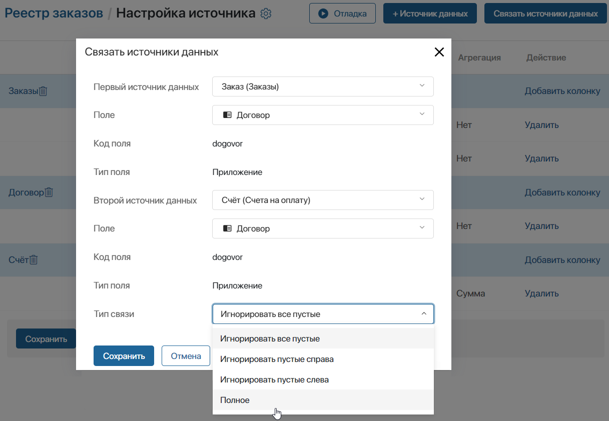
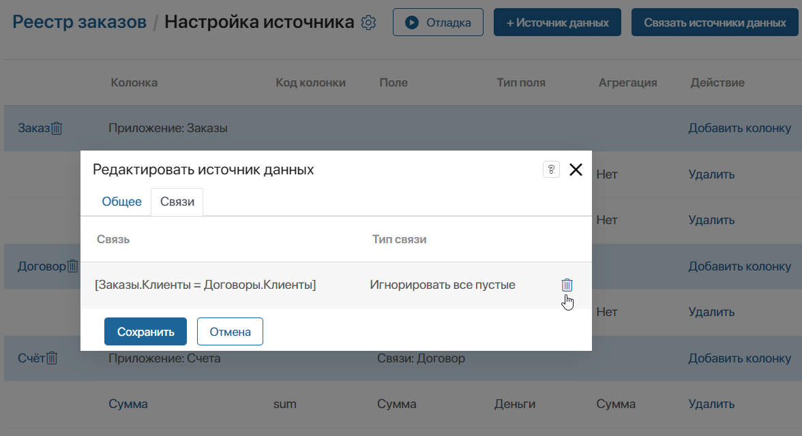
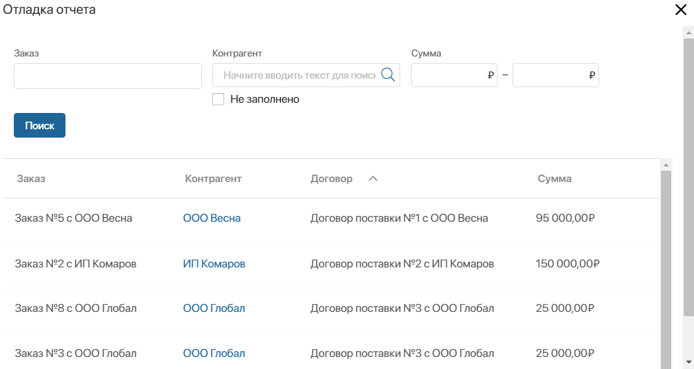

В таблице отчёта показывается результат объединения данных из нескольких источников. Для этого источники связываются между собой попарно. Объединить можно источники следующих типов:
- приложение – приложение;
- бизнес-процесс – приложение;
- бизнес-процесс – бизнес-процесс.
Доступные способы объединения источников
Источники в отчёте объединяются с помощью полей для связи из их контекста. Для этих полей обязательно включается опция поиска и сортировки.
Способ связи зависит от особенностей контекста пары источников и определяет принцип отбора данных в отчёт. Настроить объединение можно несколькими способами:
- Добавить в контекст обоих источников общее поле одного типа.
Например, это может быть код, указанный в счёте и акте, или компания‑клиент — в карточке заказа и договора;
- Создать в контексте одного источника поле типа Приложение, ссылающееся на второй источник. Для второго источника в настройках связи используется системное поле Идентификатор.
Например, в карточке счёта может быть поле, в котором выбирается элемент приложения Договоры. Чтобы объединить счета и договоры в отчёте нужно: из приложения-источника Счета указать поле Договор, из приложения-источника Договоры — системное поле Идентификатор.
- Добавить в один источник поле типа Произвольное приложение, если предполагается, что в нём пользователи указывают ссылку на элемент второго источника. Для второго источника используется поле Идентификатор.
Например, в контексте процесса Звонок есть поле, в котором указываются элементы нескольких приложений: Сделки, Лиды, Компании. В отчёте процесс можно объединить с каждым из приложений, если указать связь типа Произвольное приложение – Идентификатор.
- Создать в первом источнике поле типа Приложение, во втором источнике — поле типа Произвольное приложение.
Например, в сделке указывается коммерческое предложение. В карточке договора собраны все дополнительные документы, среди которых присутствует коммерческое предложение. В отчёте приложения Сделки и Договоры можно объединить по общему элементу коммерческого предложения. Для этого используется связь типа Приложение – Произвольное приложение.
Подробнее о способах объединения источников читайте в статье «Примеры настройки отчёта».
Объединить источники данных
Выберите два приложения, которые нужно связать, и выполните следующие действия:
- На странице Настройка источника в правом углу нажмите Связать источники данных. Кнопка появляется, когда в список добавлено два и более источников.
- В открывшемся окне укажите параметры связи приложений.

- Первый источник данных, Второй источник данных — выберите источники, которые будут объединяться по условию, например, приложения Заказы и Счета;
- Поле — для первого и второго источника укажите поле для связи из их контекста. Доступны только свойства, для которых включена опция поиска и сортировки. Значения полей будут объединять записи из источников между собой. Например, для приложений Заказы и Счета укажем общее поле Договор с типом Приложение;
- Код поля, Тип поля — заполняются автоматически в соответствии с выбранным свойством из контекста источников;
- Тип связи — выберите условие объединения, по которому записи источников будут отображаться в таблице отчёта:
- Игнорировать все пустые — при объединении источников в таблицу отчёта попадают только те записи из источников, в которых заполнено объединяющее поле. Например, если в заказе или счёте не указан договор, такой элемент будет игнорироваться;
- Игнорировать пустые слева — при объединении проверяются элементы или экземпляры из первого источника данных. Если в объединяющем поле не указано значение, запись не будет отображаться в таблице. При этом все записи второго источника попадут в отчёт;
- Игнорировать пустые справа — при объединении проверяются элементы или экземпляры второго источника данных. Если объединяющее поле в нём не заполнено, запись не будет отображаться в таблице. При этом все записи из первого источника попадут в отчёт;
- Полное — в отчёте отображаются все данные каждого источника, даже если объединяющее поле не заполнено. Тип не доступен, если одним из источников данных является бизнес-процесс.
- Сохраните настройки связи источников.
- Аналогичным образом создайте другие условия объединения. Каждый источник в списке должен быть связан хотя бы с одним другим добавленным источником.
В таблице напротив названия источника в колонке Поле будут отображаться созданные связи.
- Если вы хотите изменить добавленную связь, необходимо удалить предыдущее условие, а затем создать его заново. Для этого нажмите на название источника в списке, в открывшемся окне перейдите на вкладку Связи и нажмите на значок корзины напротив условия.

Запустить отладку отчёта
После настройки связей между добавленными источниками, вы можете посмотреть, как будет выглядеть страница отчёта. Для этого на верхней панели страницы настройки источников нажмите кнопку Отладка.
В открывшемся окне отобразится таблица с данными и фильтры, созданные из колонок с включённой опцией поиска по полю.

Вы можете закрыть окно отладки и отредактировать созданный отчёт.
Чтобы завершить настройки отчёта и сделать его доступным для пользователей, под списком добавленных источников нажмите кнопку Сохранить.